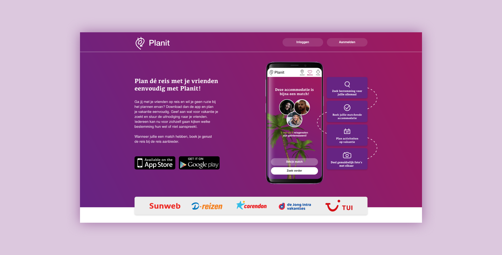
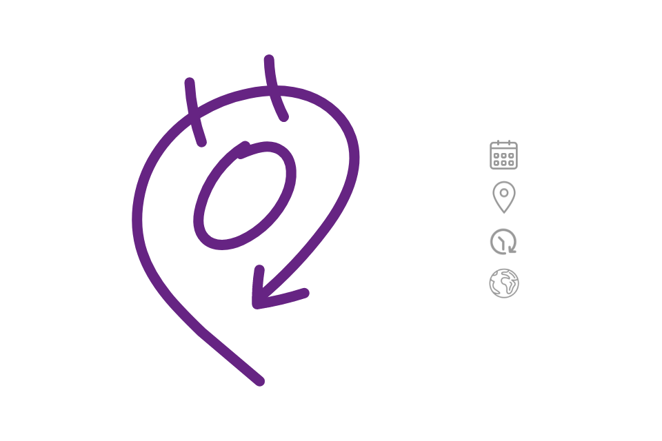
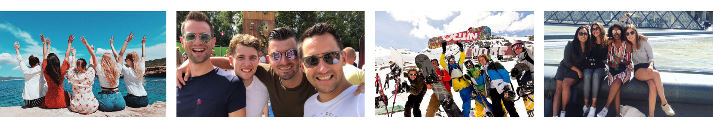
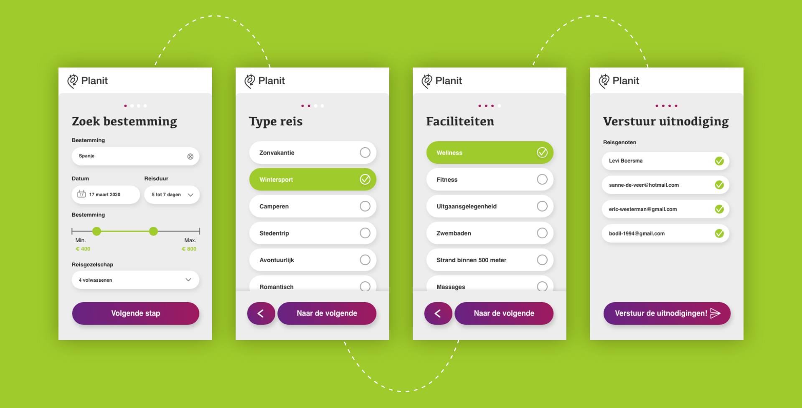
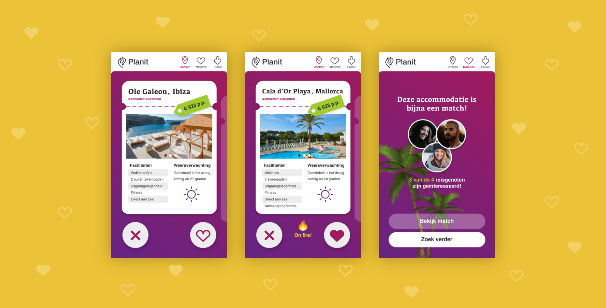
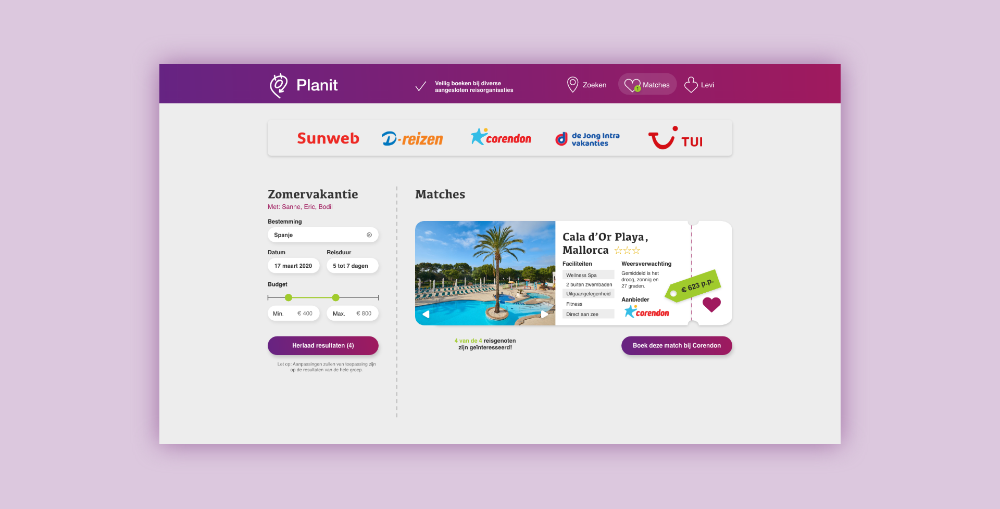
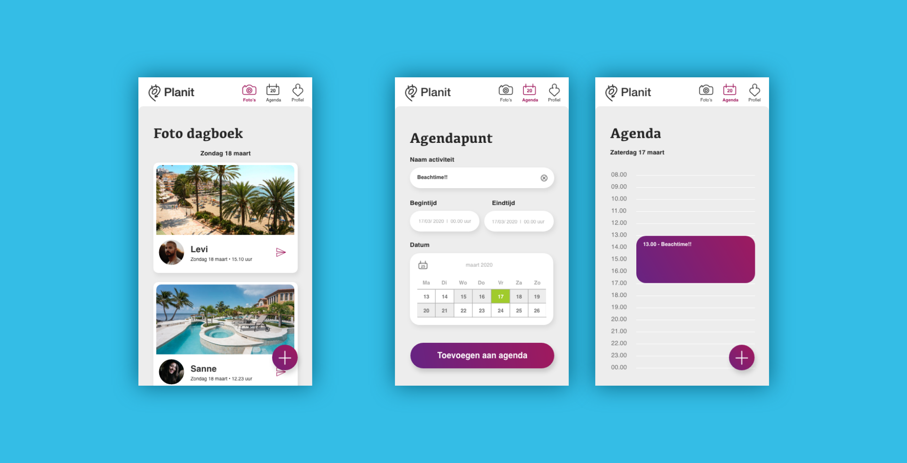

De opdracht
Maak een reisgids die in meerdere fases van een reis/vakantie gebruikt kan worden. Hierbij wordt gedacht aan een multi-device prototype.
Planit
Planit is een multi-device die het plannen van een groepsreis soepel laat verlopen en zorgt dat wanneer de groep op vakantie is er één gedeelde plek is voor het plannen van activiteiten en het delen van de vakantie foto’s.
De naam Planit is ontstaan door de wereld (planet) en ‘het’ plannen van iets samen te voegen. In het beeldmerk is een agenda terug te zien in de twee bovenste streepjes. De pijl heeft de vorm van een locatie icoon en geeft ook aan dat de app je gedurende de hele reis bijstaat. Het middelste rondje staat voor de aardbol.
Planit houd het gezellig
Planit is speciaal ontworpen voor jong volwassenen die met een vriendengroep (meer dan 4 personen) op vakantie willen gaan. Het zijn sociale mensen die graag hun reis bijhouden en delen met elkaar. Hun leeftijd is rond de 18 t/m 30 jaar. Ze studeren of werken en houden van uitgaan en activiteiten doen met vrienden. Doordat ze met meerderen gaan reizen, merken ze dat het moeilijk is een vakantie te kiezen en plannen waarbij iedereen het naar hun zin heeft.
In vier stappen op vakantie
Planit vraagt eerst vier gemakkelijke vragen over jullie droomvakantie. Door deze vragen in stappen aan de gebruiker te laten zien (sequencing), blijft het overzichtelijk en zal er zo min mogelijk frustratie ontstaan. We willen natuurlijk dat de vrienden zo gerust mogelijk hun vakantie kunnen zoeken.
De gebruiker kan de type reis en de faciliteiten selecteren door dat de lijsten op het meest populair zijn gesorteerd. Zo kunnen ze snel hun keuze aanklikken.
Door de progressie bolletjes bovenaan de pagina ziet de gebruiker waar hij zich in het filter proces bevindt.
Swipe naar jouw droomvakantie
Nadat er voorkeuren zijn aangegeven, worden er resultaten weergegeven. Per accommodatie worden er een aantal foto’s getoond, de faciliteiten, de prijs per persoon en de weersverwachting. Fijn is dat je even niet aan de anderen hoef te denken en in je eigen tijd kunt swipen.
Boek via desktop
Wanneer er een match is kan de reis geboekt worden. Je wordt doorgestuurd naar de reisaanbieder van die bepaalde accommodatie voor een vertrouwd boekingsproces.
Verder plannen van de reis
Als de groep op vakantie is, zullen er twee andere functionaliteiten zijn in de app; een gezamenlijke agenda en fotodagboek. Iedereen kan daarin activiteiten toevoegen en foto’s delen met elkaar. Door de duidelijke float button in de thumbzone weten de gebruikers gelijk waar ze op moeten klikken om iets toe te voegen.
Resultaat
- Ieder kan zelf op zijn gemak een bestemming zoeken
- Er is een match als meer dan 75% van de groep eenzelfde accommodatie leuk vind
- Boek bij bekende reisorganisaties voor een vertrouwd gevoel
- Één gedeelde plek voor afspraken en foto’s
- Geen discussies, maar alleen het plezier van de vakantie